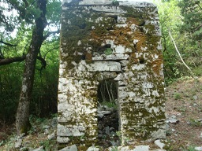
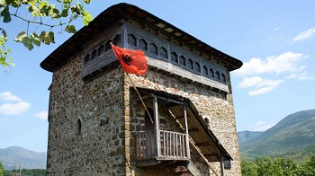

| Kryefaqja | Shtrirja | Historiku | Popullsia | <Ansambli Dardania | Peronalitete |
|---|
Tropoja është e banuar që në periudhën e hershme të bronzit(2000-1700 vjet p.e.s) që daton pas Neolitit të vonë. Në kohën e Ilirisë, ky rreth ka qenë i populluar nga fisi i Dardanëve. Vendbanimi i hershëm i Rosujës, ka qenë qendra kryesore administrative e pozicionuar në kufirin mes dy fisive, Labeatët dhe Dardanët, që daton 400 vjet p.e.s, nga ku rrjedh dhe emërtimi i banorëve autoktonë vendas “Dardanmalas”. Vendbanime të tjera që datojnë para erës sonë janë ato të Bujanit, Selimajt,Komit,Cerrnicës, Shoshanit, Nikajt dhe Mulajt. Gjatë periudhës së pushtimit nga Perandoria Osmane, Tropoja ishte pjesë e Vilajetit të Kosovës, kohë nga e cila ka trashëguar dhe toponimin tradicional “Malësia e Gjakovës”.  Para fillimit të Luftës së Dytë Botërore, Tropoja së bashku me Hasin dhe Kukësin ishin njësi përbërëse të Prefekturës së Kosovës, që ishte një nga 10 zonat administrative të Shqipërisë së atëhershme. Të një rëndësie mbarëkombëtare janë dhe dy kuvendet e zhvilluara gjatë viteve 1939-1945. Kuvendi i Malësisë së Gjakovës në gusht të 1943, në të cilin u lidh besa ndërmjet të gjithë delegatëve në kuvend për luftë të përbashkët kundër pushuesit fashist, si dhe Konferenca e Bujanit, ku u deklarua shkëputja dhe pavarësia e plotë e Kosovës nga Jugosllavia. Tropoja u çlirua nga pushtuesit në tetor të vitit 1944. Personalitetet historike janë të shumtë në numër në këtë zonë, por vlen të përmendet Bajram Curri, Hero i popullit, i cili në moshën 18 vjeçare luftoi përkrah Mic Sokolit dhe Ali Ibrës për mbrojtjen e trevave shqiptare të Plavës dhe Gucisë
Ne vitin 1913, Fuqitë e Mëdha të botës i copëtuan trojet shqiptare me thikën e pabesise, por edhe duke sjellë një histori të zezë për fatet e kombit tonë. Për rrjedhojë, Malësia e Gjakovës ndahet artificialisht në dy pjesë. Pjesa lindore, mes rrafshit të Dukagjinit dhe Qafës së Morinës mbetet nën sundimin policor të Serbisë pushtuese, së bashku me tërë Kosovën etnike shqiptarodardane. Pjesa tjetër nga Qafë Morina (në lindje) e deri në Qafë të Agrit (në perëndim) dhe nga Qafa e Vraninës (në veri) e deri në lumin Drin (në kufirin jug e juglindje) mbetet në administrimin shtetëror të Shqipërisë. Deri me mbylljen e dhunshëm të kufirit shqiptaro-shqiptar, qendra tregtare ekonomike ishte shehri I Gjakovës. Ky vendim e ndau me thikën e helmuar trupin e Shqipërisë hijekeqe. Ndau fizikisht vellain nga vëllai, bijën nga nëna, nipërit nga dajallarët dhe shumë familje nga trojet e tyre etnike. Themi fizikisht pasi shpirtërisht nuk u ndamë kurrë. Pjesa e Malësisë së Gjakovës e mbetur në administrimin shtetëror të Shqipërisë, gradualisht filloi të quhej Tropojë, e pagëzuar me emrin e fshatit ku u vendosën zyrat administrative të përkohshme.
Në vitin 1953 qendra administrative vendoset në fshatin Kolgecaj dhe shpallet qyteti me emrin e heroit Bajram Curri. Aso kohe treva etnike e Malësisë së Gjakovës përgjysmohet gjeografikisht, ekonomikisht dhe politikisht. Shpirtërisht bashkoheshim me këngët piskamë të kushtrimit, me fyejte e çobanisë, me kcimet dhe lojërat popullore ndër rudinat e bjeshkëve të përbashkëta. Ata na shikonin dhe na dëgjonin. Dhe ne I shikonim dhe i dëgjonim. Shpirtrat tanë i bashkonte qarkullimi i gjakut vëllazëror në arteriet binjake të historisë së kombit. Përshëndeteshin në largësi, me anë të shenjave e gjesteve kuptimplotë të kthyera në rite kohore për bashkim.
